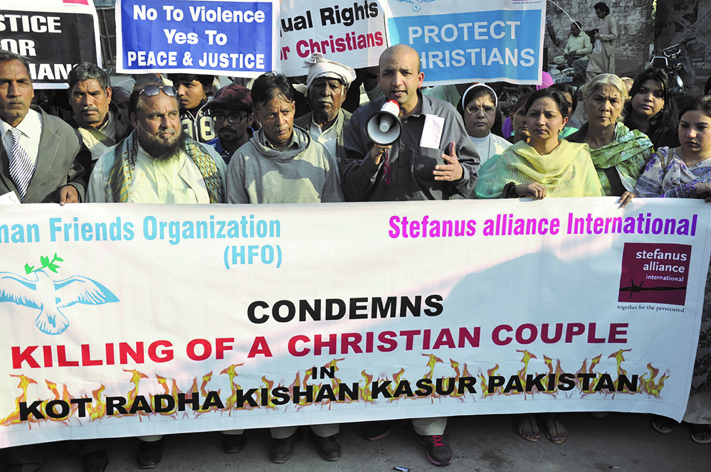
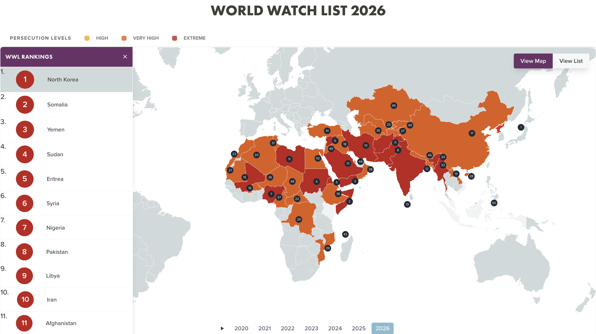

Årets aksjon

Årets prosjekt

Pakistan er et av verdens verste land å være religiøs minoritet i. Nær 97 % av innbyggerne er muslimer, og bare 3,6 % tilhører religiøse minoriteter. Folketellingen i 1998 talte 2,7 millioner kristne. Siden slutten av 1970-tallet har en økende islamisering av rettsvesen, skole og samfunnsliv rammet minoritetene hardt.
Blasfemilovene, som har dødsstraff for «spott av profeten», blir ofte misbrukt mot kristne. En anklage er nok til å sette liv og hjem i fare. I 2023 ble en kristen landsby i Jaranwala angrepet av en mobb, og over 25 kirker og 90 hus ble vandalisert eller brent.
Ofrene mister hjem og trygghet, og mange blir flyktninger i eget land. Selv slektninger tør ofte ikke ta dem inn, fordi de selv lever i fattigdom og frykter naboenes vrede. Uten fri rettshjelp får sakene deres aldri behandling i rettssystemet.
Siden 2014 har Stefanusalliansen støttet Human Friends Organization (HFO), grunnlagt av Sajid Christopher Paul. HFO gir rettshjelp, traumebehandling og hjelp til å finne nytt bosted og komme tilbake i arbeid. De dokumenterer også brudd på religionsfriheten og tar sakene med til myndighetene i Pakistan og til det internasjonale samfunnet. Du kan lese mer om Stefanusalliansen og Human Friends Organization her.
Hjelpen når langt, men behovet er langt større. Til dette ber vi om din støtte!
Kilder: Stefanusalliansen: Pakistan og Pakistan: Hjelp til ofre for blasfemilov og tvangskonvertering.
Våre mål
Ofre for blasfemianklager og tvangskonvertering får fri rettshjelp.
Traumatiserte ofre og familiene deres får behandling, nytt bosted og hjelp tilbake til arbeidslivet.
Brudd på religionsfriheten dokumenteres og løftes frem, i Pakistan og internasjonalt.